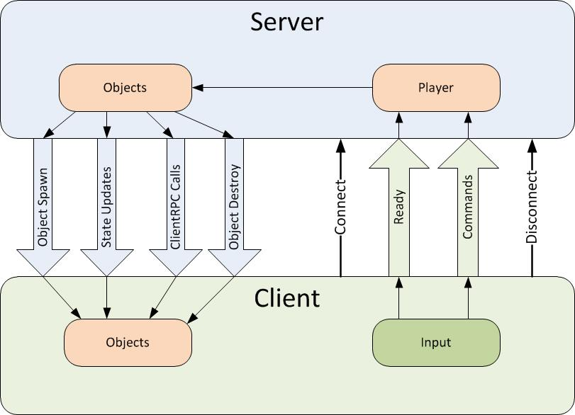

Remote Actions

The network system has ways to perform actions across the network. These type of actions are sometimes called Remote Procedure Calls. There are two types of RPCs in the network system, Commands - which are called from the client and run on the server; and ClientRpc calls - which are called on the server and run on clients.
The diagram below shows the directions that remote actions take:

Commands
Commands are sent from player objects on the client to player objects on the server. For security, Commands can only be sent from YOUR player object, so you cannot control the objects of other players. To make a function into a command, add the [Command] custom attribute to it, and add the “Cmd” prefix. This function will now be run on the server when it is called on the client. Any arguments will automatically be passed to the server with the command.
Commands functions must have the prefix “Cmd” and cannot be static. This is a hint when reading code that calls the command - this function is special and is not invoked locally like a normal function.
public class Player : NetworkBehaviour
{
void Update()
{
if (!isLocalPlayer) return;
if (Input.GetKey(KeyCode.X))
CmdDropCube();
}
// assigned in inspector
public GameObject cubePrefab;
[Command]
void CmdDropCube()
{
if (cubePrefab != null)
{
Vector3 spawnPos = transform.position + transform.forward * 2;
Quaternion spawnRot = transform.rotation;
GameObject cube = Instantiate(cubePrefab, spawnPos, spawnRot);
NetworkServer.Spawn(cube);
}
}
}
Be careful of sending commands from the client every frame! This can cause a lot of network traffic.
It is possible to send commands from non-player objects that have client authority. These objects must have been spawned with client authority or have authority set with NetworkIdentity.AssignClientAuthority. Commands sent from these object are run on the server instance of the object, not on the associated player object for the client.
ClientRpc Calls
ClientRpc calls are sent from objects on the server to objects on clients. They can be sent from any server object with a NetworkIdentity that has been spawned. Since the server has authority, then there no security issues with server objects being able to send these calls. To make a function into a ClientRpc call, add the [ClientRpc] custom attribute to it, and add the “Rpc” prefix. This function will now be run on clients when it is called on the server. Any arguments will automatically be passed to the clients with the ClientRpc call..
ClientRpc functions must have the prefix “Rpc” and cannot be static. This is a hint when reading code that calls the method - this function is special and is not invoked locally like a normal function.
public class Player : NetworkBehaviour
{
int health;
public void TakeDamage(int amount)
{
if (!isServer) return;
health -= amount;
RpcDamage(amount);
}
[ClientRpc]
void RpcDamage(int amount)
{
Debug.Log("Took damage:" + amount);
}
}
When running a game as a host with a local client, ClientRpc calls will be invoked on the local client even though it is in the same process as the server. So the behaviours of local and remote clients are the same for ClientRpc calls.
TargetRpc Calls
TargetRpc functions are called by user code on the server, and then invoked on the corresponding client object on the client of the specified NetworkConnection. The arguments to the RPC call are serialized across the network, so that the client function is invoked with the same values as the function on the server. These functions must begin with the prefix "Target" and cannot be static.
Context Matters:
- If the first parameter of your TargetRpc method is a
NetworkConnectionthen that's the connection that will receive the message regardless of context. - If the first parameter is any other type, then the owner client of the object with the script containing your TargetRpc will receive the message.
This example shows how a client can use a Command to make a request from the server (CmdMagic) by including its own connectionToClient as one of the parameters of the TargetRpc invoked directly from that Command:
public class Player : NetworkBehaviour
{
int health;
[Command]
void CmdMagic(GameObject target, int damage)
{
target.GetComponent<Player>().health -= damage;
NetworkIdentity opponentIdentity = target.GetComponent<NetworkIdentity>();
TargetDoMagic(opponentIdentity .connectionToClient, damage);
}
[TargetRpc]
public void TargetDoMagic(NetworkConnection target, int damage)
{
// This will appear on the opponent's client, not the attacking player's
Debug.Log($"Magic Damage = {damage}");
}
[Command]
void CmdHealMe()
{
health += 10;
}
[TargetRpc]
public void TargetHealed(int amount)
{
// No NetworkConnection parameter, so it goes to owner
Debug.Log($"Health increased by {amount}");
}
}
Arguments to Remote Actions
The arguments passed to commands and ClientRpc calls are serialized and sent over the network. You can use any supported mirror type.
Arguments to remote actions cannot be sub-components of game objects, such as script instances or Transforms.